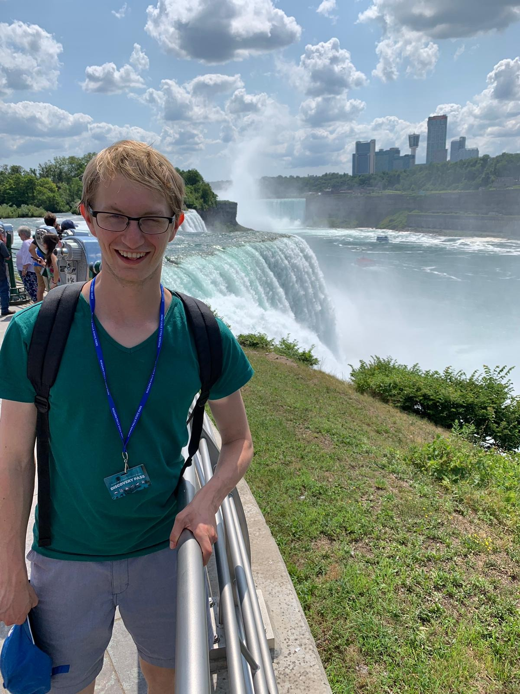

Hi there, I'm Timon. I do multiple things in order to become broadly skilled instead of an expert in a narrow field. Currently I am writing code, carving wood, writing on my blog, talking on my podcast (available on spotify and apple podcasts), making music, tending to a micro-garden on my balcony and taking series of photographs.
I do this to become a polymath or renaissance man. So far I really like the variety and creativity that this path has unleashed in me. This website is partly a documentation of this pursuit.
Wonder what I look like? Here's a picture of me.
This academic year (2020/2021) is the year in which the stars lined up and I get to fulfill my dream of writing code for a satellite! Read more about this here.
Next to the things listed above, I like reading books. A lot. My Kindle and I are very close. Through reading all of these books I've been inspired to live my life in a certain way, including my mission to become a polymath. You can read about that here.
Want to get in touch? Send me an email! To get an overview of my professional life you can download my resume
If you wonder why this website looks the way it does, let me explain.
However beautiful and important the earlier mentioned things might be, all of it pales in comparison to the truly important questions in life, like: Is it wednesday?